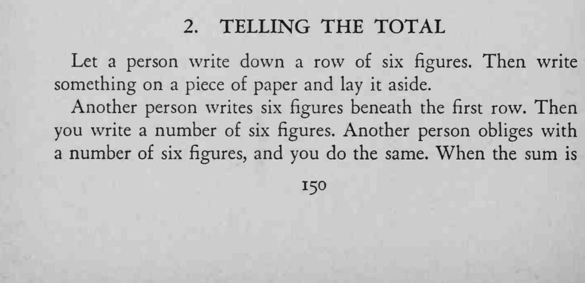
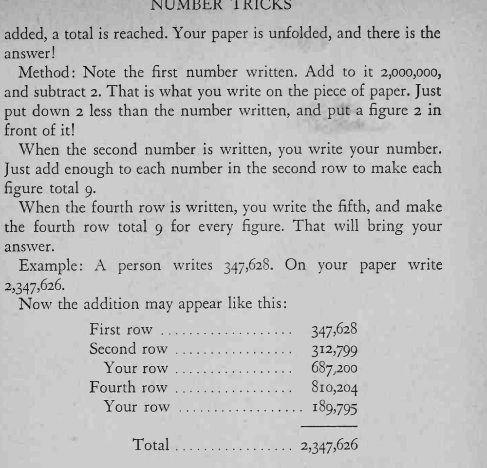

观众与你交替写下几行六位数，最后相加，你事先写好放在一边的纸上正是同样的总数。
口诀是「前加 2、末减 2」，补 9 时每一位都要对准。


Let a person write down a row of six figures. Then write something on a piece of paper and lay it aside. Another person writes six figures beneath the first row. Then you write a number of six figures. Another person obliges with a number of six figures, and you do the same. When the sum is added, a total is reached. Your paper is unfolded, and there is the answer! Method: Note the first number written. Add to it 2,000,000, and subtract 2. That is what you write on the piece of paper. Just put down 2 less than the number written, and put a figure 2 in front of it! When the second number is written, you write your number. Just add enough to each number in the second row to make each figure total 9. When the fourth row is written, you write the fifth, and make the fourth row total 9 for every figure. That will bring your answer. Example: A person writes 347,628. On your paper write Now the addition may appear like this: First row 347,628 Second row 312,799 Your row 687,200 Fourth row 810,204 Your row 189,795 Total 2,347,626